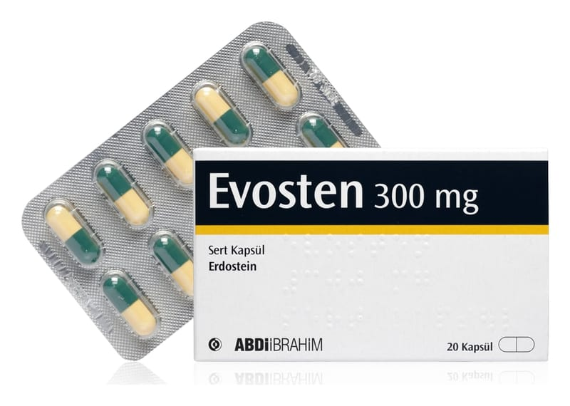

Evosten 300 mg Sert Kapsül, 20 Kapsül

Ne için kullanılır
KT · Bölüm 1EVOSTEN, beyaz ya da beyazımsı renkte homojen toz içeren, gövdesi sarı, kapağı yeşil renkli, sert jelatin kapsüldür ve 20 adet kapsül içeren blisterlerde ambalajlanmıştır.
EVOSTEN, mukolitikler grubundan bir etkin madde olan erdostein içerir.
EVOSTEN, balgam söktürücü etkili (mukolitik), akut (ani başlayan ve birden şiddetlenen) ve kronik solunum yolu hastalıklarında yoğun balgamın akışkanlığının sağlanmasında kullanılan bir ilaçtır.